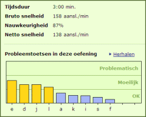

TypingMaster berekent automatisch uw typeresultaten en slaat deze op. Voor elke oefening krijgt u scores voor de volgende onderwerpen:
In de volgende schermen zullen deze onderwerpen worden uitgelegd.
